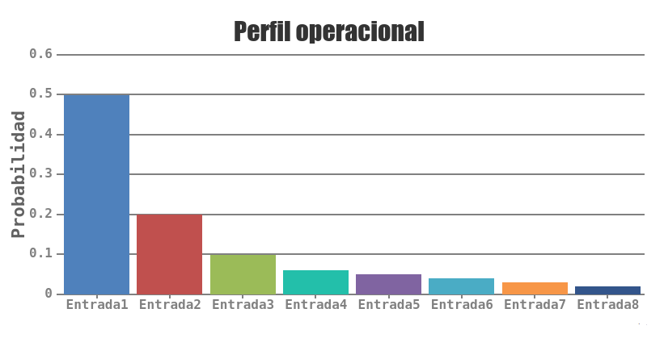
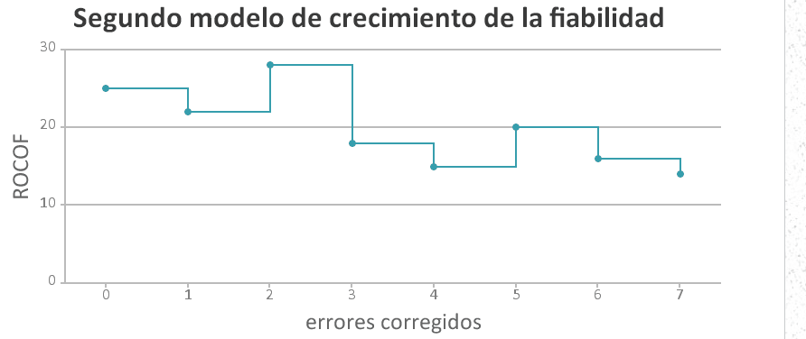

Fiabilidad
El objetivo de un sistema crítico es que sea lo más confiable posible, en otras palabras que sea fiable, seguro, esté disponible siempre y tenga protección contra cualquier tipo de ataque. Para asegurar la confiabilidad hay que realizar varias pruebas para validar y verificar el sistema, la prueba se considera exitosa cuando el sistema cumple con los objetivos para la cual fue creada la prueba, una de las funciones principales de las pruebas es saber si están cumpliendo las especificaciones, ya sea a nivel general o únicamente un componente, cuando se prueba un componente se dice que es una prueba unitaria.
Validar responde a la pregunta ¿estamos construyendo el producto correcto?, mientras que la verificación responde a la pregunta ¿estamos construyendo el producto correctamente?, o lo que es lo mismo, validación es asegurarse que el producto cumple con las especificaciones del cliente, mientras que la verificación se encarga de asegurar el funcionamiento correcto y óptimo de las funciones implementadas ya que de esto depende el éxito o fracaso de un sistema crítico.
Para comprender mejor como es el estudio de la fiabilidad se debe conocer primero como es un perfil operacional, consiste en una especificación de entradas y la probabilidad de que ocurra cada entrada respectivamente, de esta manera las entradas que tienen la más alta probabilidad de ocurrir se encuentran en una sola parte, mientras que cada entrada especial se encuentra por separado para su estudio particular.

Para poder conocer el estado de la fiabilidad de un sistema se deben de seguir los siguientes pasos:
- Se establece un perfil operacional estudiando los sistemas existentes que sean similares al que se desea desarrollar.
- Se construye un conjunto de datos de prueba provenientes del perfil operacional.
- Se prueba el sistema con estos datos y se registra la frecuencia con la que ocurren los errores.
- Se calcula la fiabilidad del sistema obteniendo suficientes datos en el paso anterior para realizar un estudio estadístico.
A esta forma de conocer la fiabilidad se le llama prueba estadística, su objetivo es medir la fiabilidad usando una gran cantidad de datos obtenidos con pruebas aleatorias, es lo contrario a las pruebas de defectos donde se trata de encontrar la mayor cantidad de errores sin importar que tan fiable haya resultado el sistema.
Si se aplica correctamente este método se puede conocer la fiabilidad, pero en la práctica es difícil lograr realizar bien todos los pasos, esto se debe principalmente a:
- Los perfiles operacionales no son una descripción precisa de la utilización real del sistema, además no es posible tener un perfil completo ya que el sistema debe ser capaz de responder a entradas no contempladas en el perfil.
- Los altos costos en la generación de datos de prueba.
- La incertidumbre estadística cuando se busca una fiabilidad alta.
La incertidumbre estadística es un problema que siempre estará presente en los modelos probabilísticos, ya que obtener una buena predicción de la fiabilidad requiere provocar errores del sistema, pero los datos que obtendremos siempre serán una muestra y no representará todos los errores de nuestro sistema para todo instante de tiempo; la mejor manera de generar los datos que se usarán en las pruebas es por medio de herramientas que generen los datos con las características que se necesitan, pero muchas veces éstas herramientas no son suficientes para generar los datos de los sistemas con mayor interación, por lo que los datos se deben generar a mano e implica un mayor costo.
Un sistema nunca logrará ser 100% confiable, generalmente un sistema de alta fiabilidad debe tener un error cada 100000 años, el nivel de fiabilidad se debe negociar con el cliente ya que mientras más fiable se desea un sistema los costos y el tiempo necesario aumentan de manera no lineal. Para predecir la fiabilidad se necesita tratarla como una variable de un modelo matemático, el modelo más simple de crecimiento de la fiabilidad es un modelo de función escalonada, en donde la fiabilidad va aumentando cada vez que se repara un error, el problema con este modelo es que supone que cada error es igual de importante y que la solución al error se implementa de forma correcta sin afectar a los demás componentes del sistema, lo que ocasiona que cuando se hacen las reparaciones el ROCOF (ROCOF: Rate of OCcurrence Of Failures, tasa de ocurrencia de fallos) siempre disminuye.

Cuando se reparan los errores comunes la fiabilidad aumenta más a comparació de arreglar los que ocurren menos seguido, con lo que es más claro porqué el crecimiento en la fiabilidad del sistema no es constante con cada error arreglado. En los modelos posteriores siempre se toma en cuenta una variable aleatoria para representar a los errores nuevos que se crearán por arreglar los errores anteriores.

Si se compara el avance de la fiabilidad con modelos similares se podría predecir la fiabilidad extrapolando los datos, aunque estos valores sean aproximados se puede tener una idea de como será el comportamiento general del sistema si no sucede algo que ocasione un cambio drástico. Mientras no se logre llegar al nivel de fiabilidad requerido las pruebas y la depuración deben continuar hasta ese momento, en donde las depuraciones consisten en más pruebas estadísticas y en tener las especificaciones de una manera formal para poder entender y arreglar los errores encontrados en las pruebas.
Aunque no exista un modelo perfecto para obtener la fiabilidad, el modelo anterior tiene muchas ventajas, por lo que es necesario gastar parte de los recursos en usarlo, conocer con antelación el crecimiento de la fiabilidad es útil:
- Se puede calendarizar las pruebas, con la calendarización de las pruebas se puede obtener el tiempo necesario que se le dedicara a las pruebas, con éste se puede conocer si es necesario asignar más recursos a la fiabilidad para entregar el proyecto en la fecha acordada con el cliente.
- Se negocian los requerimientos del sistema, si el modelo de crecimiento de la fiabilidad es lento se puede negociar con los clientes éste punto para saber si se le asignarán más recursos a la fiabilidad o si se bajará el nivel requerido de fiabilidad.